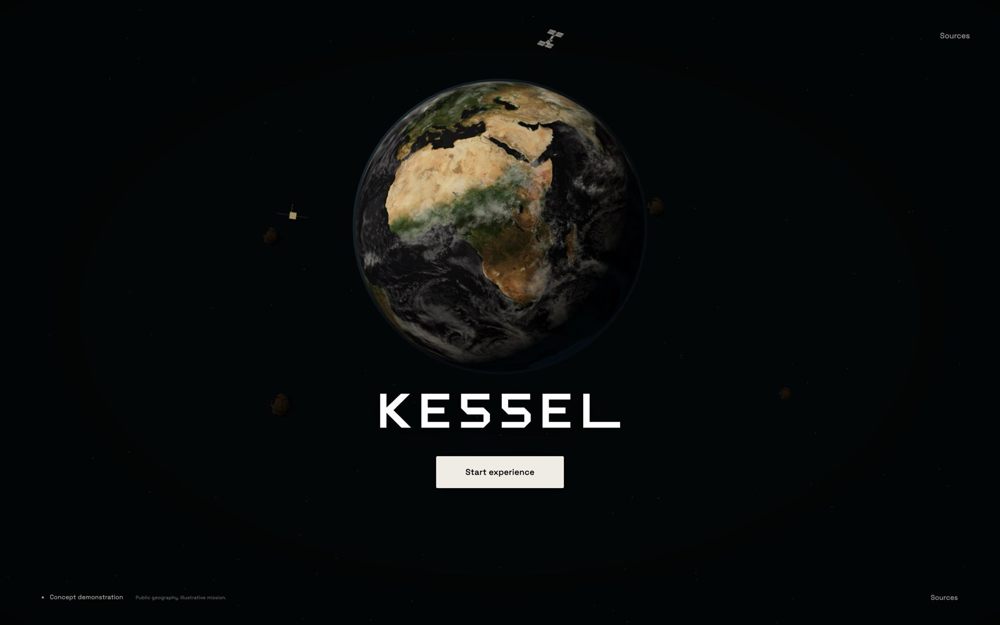

Orbital home. Immersive environments.
Two real-browser directions, followed by a 60-second shot animatic. Direction A is implemented. Direction B is retained for comparison. The downstream surface, mine, reference and hardware shots show the current route; their separate realism tickets remain open. This study records implementation and evidence, not maintainer visual acceptance.
The camera alternative uses modest 2D motion over retained shots to compare pace and composition. The clean fade into Rwanda is implemented in the live page. Neither alternative claims a surveyed continuous underground camera path.
Recorded native walkthrough
Actual M1 Chrome capture at the tested laptop viewport. This recording includes inspection pauses and environment browsing, so it is longer than the short main route.
Before and evidence

Implementation, measurements and limitations · Native report · Cache/recovery report